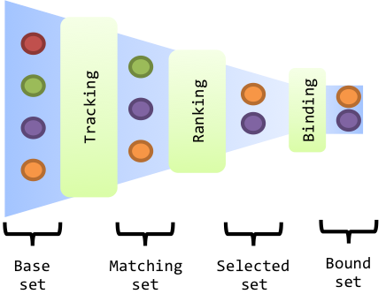

Service Binding Interceptors
Service Bindings are the connection between a service consumer and a service provider. Following the service-orientation paradigm (publication-lookup-binding), bindings are woven based a local analysis only: the consumer tracks and chooses the service to user. However, this locality avoids using more global knowledge to resolve the dependencies.
Service binding interceptors allows you to customize the service bindings from outside the involved components (providers or consumers). It let you adapt the bindings dynamically without touching anything in your component implementation.
What's an interceptor
Interceptors are services exposed in the OSGi service registry. They can be iPOJO components, but it's not a necessity.
Each interceptor can manage a set of dependencies. The interceptor selects this set with a LDAP filter, exposed as service properties (named target):
@Component(immediate = true) @Provides public class AddLocationTrackingInterceptor extends DefaultServiceTrackingInterceptor { @ServiceProperty private String target = "(dependency.id=foo)"; //... }
The properties on which the filter can rely are explained below.
There are several types of interceptors:
- Tracking interceptors - decide whether a service can be seen by a service dependency, and can transform service references
- Ranking interceptors - select and sort service references accepted by the tracking interceptors
- Binding interceptors - can modify the injected service objects
For all these classes, default implementations are available in (http://felix.apache.org/ipojo/api/1.11.1/org/apache/felix/ipojo/dependency/interceptors/package-summary.html).
Service dependency theory
Before looking more deeply into these interceptors, let's first explain the service dependency principle. Before being injected inside the component's code, a service (reference) traverses a set of layers. The service dependencies consider all services from the service registry and narrows this set to select the right set of services. The narrowing process has three phases.
The initial set of services considered by the service dependencies is named base set. It contains all services from the service registry providing the requested service interface.
Then, for all services from the base set, the tracking interceptors (handling the service dependency) can decide whether or not to accept the service. By this way, they can decide to hide services. They are also able to transform services, to add and/or remove service properties. Several tracking interceptors can handle the same service dependency. They are invoked sequentially. Service accepted by all tracking interceptors are composed the matching set. Notice that the OSGi LDAP filters are tracking interceptors.

Unlike service tracking interceptors, only one ranking interceptor can be plugged on a service dependency. The ranking interceptor transforms the matching set to the selected set by selecting and sorting services. The iPOJO comparator feature is a ranking interceptor. Notice that ranking interceptor may select an empty set from the matching set.
Finally, the last layer is the binding interceptor. This layer does not narrow the service set, but may interceptor the weaving of the binding for monitoring or interception purposes.
Selection of service dependencies
All interceptors must publish a target service property indicating the set of service dependency they handle. This property is an LDAP filter that can rely on the following properties:
- instance.name : to select all dependencies of a specific instance (String)
- instance.state : to filter on the instance state (int)
- factory.name : to select all instances from a specific factory (String)
- bundle.symbolicName : to select the dependencies from all instances declared in a specific bundle (String)
- bundle.version : to refine the filter based on the bundle symbolic name with a version (String)
- dependency.specification : to select all dependencies looking for a specific interface (String)
- dependency.id : to select a dependency based on its identifier (String)
- dependency.state : to select a dependency based on the dependency state (int)
- objectClass : to select a dependency looking a a specific interface. This property also contains the inherited interfaces (String array)
Let's see some examples:
- select all dependencies from an instance named
foo:(instance.name=foo). - select all invalid dependencies:
(dependency.state=0) - select all dependencies targeting the specification
LogService:(dependency.specification=o.o….LogService) - select the dependency
foofrom the instanceinstance:(&(instance.name=instance)(dependency.id=foo)) - select all dependencies targeting
AbstractServiceor sub-classes:(objectClass=o.o…AbstractService)
Service Tracking Interceptors
Service tracking interceptors are responsible for accepting matching services. Their main goal is to filter the base set. The following tracking interceptor hides all services with the hidden property:
@Component(immediate = true) @Provides public class HidingTrackingInterceptor extends DefaultServiceTrackingInterceptor { @ServiceProperty private String target; private String prop = "hidden"; @Override public <S> TransformedServiceReference<S> accept(DependencyModel dependency, BundleContext context, TransformedServiceReference<S> ref) { if (ref.contains(prop)) { return null; } else { return ref; } } }
Such interceptor needs to be instantiated with a configuration specifying the target property.
Service Tracking Interceptors can also transform service references to add/remove service properties:
@Override public <S> TransformedServiceReference<S> accept(DependencyModel dependency, BundleContext context, TransformedServiceReference<S> ref) { return ref .addProperty("location", "kitchen") .removeProperty("hidden"); }
Tracking interceptors can decide to invalidate the matching set and ask to be re-evaluated. For example, a reconfigured interceptor must reevaluate all services from the base set:
@Override public void set(String newValue) { prop = newValue; invalidateMatchingServices(); }
The invalidateMatchingServices invalidates the matching service set and triggers a complete evaluation of the base set.
Several tracking interceptors can manage the same dependency. All interceptors must accept matching services. The last evaluated tracking interceptor is the iPOJO LDAP filter.
Service Ranking Interceptors
Service Ranking Interceptors receive the services from the matching set as input and returns a sorted sub-set. Unlike service tracking interceptors, only one ranking interceptor can manage a dependency.
@Component(immediate = true) @Provides public class FilterRankingInterceptor extends DefaultServiceRankingInterceptor { @ServiceProperty private String target; private Comparator<ServiceReference> comparator; public FilterRankingInterceptor() { comparator = new GradeComparator(); } @Override public List<ServiceReference> getServiceReferences(DependencyModel dependency, List<ServiceReference> matching) { List<ServiceReference> references = new ArrayList<ServiceReference>(); for (ServiceReference ref : matching) { if (ref.getProperty("grade") != null) { references.add(ref); } } Collections.sort(references, comparator); return references; } }
The FilterRankingInterceptor filters and ranks the matching services. First, it ignores all services without the grade property. Then, it sorts the remaining services using a comparator.
Notice that ranking interceptors can return an empty set. Unlike tracking interceptors, they process a set of services (the matching set).
When a ranking interceptors changes its ranking criteria, it can invalid the selected set with the invalidateSelectedServices method:
@Override public void set(String newValue) { inverse = Boolean.parseBoolean(newValue); invalidateSelectedServices(); }
The iPOJO comparator is a ranking interceptor. As only one interceptor can manage the dependency, the comparator is replaced when an external interceptor is plugged. It is restored when the external interceptors disappears.
Binding Service Interceptors
The last category of interceptors is bindings interceptors. They intercepts the binding weaving, and thus, can change the injected service objects. This kind of interceptors are often used to inject a proxy intercepting some invocations:
@Component @Provides public class ProxyBindingInterceptor extends DefaultDependencyInterceptor implements ServiceBindingInterceptor { @ServiceProperty private String target; private HashMap<ServiceReference, Object> deps = new HashMap<ServiceReference, Object>(); @Override public <S> S getService(DependencyModel dependency, ServiceReference<S> reference, S service) { S proxy = (S) Proxy.newProxyInstance(this.getClass().getClassLoader(), new Class[]{dependency.getSpecification()}, new Interceptor(service)); deps.put(reference, proxy); return proxy; } @Override public <S> void ungetService(DependencyModel dependency, ServiceReference<S> reference) { deps.remove(reference); }
Several binding intercepts can be plugged on the same service dependency, creating a chain of interception.